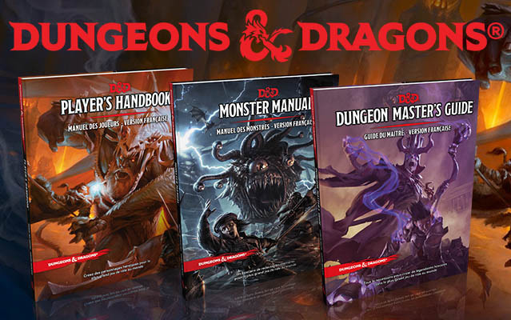

D&D 5 en VF
Beaucoup de personnes qui s'intéressent sur le tard à D&D 5 sont un peu perdues parmi toutes les « options » proposées maintenant en français autour de cette édition. Alors voici un résumé de l'histoire.
Basic Rules
Juillet 2014. Wizards of the Coast (WotC) met gratuitement à disposition sur son site web le PDF des Basic Rules de D&D5. Ce PDF sans image contient tout ce qu'on peut considérer être le moteur du jeu (les règles de combat, de magie, d'exploration, de création de perso, etc) ainsi que les 4 races (humain, elfe, nain, halfelin) et les 4 classes (guerrier, clerc, magicien, roublard) les plus emblématiques de Dungeons & Dragons sur 20 niveaux, et de nombreux sorts. Le public a ainsi la possibilité de jouer gratuitement à la 5ème édition de Dungeons & Dragons. La seule restriction est la limitation des options : uniquement 4 races et 4 classes (mais les principales), pas tous les sorts et aucun don.
La communauté réunie autour du site Tapouweb depuis le playest de DDNext commence immédiatement à travailler sur la traduction de ces Basic Rules et en novembre 2015, le webmaster d'Tapouweb obtient de la part de WotC l'autorisation officielle de publier gratuitement sur le site Tapouweb le PDF de la traduction française des Basic Rules.
D&D 5 en VO
Août 2014. Le Player's Handbook sort à la vente, en anglais uniquement. Aucune annonce ni promesse d'une sortie dans une autre langue à court terme. Les mois passent, et certains commencent à penser que cette 5ème édition, pourtant née en plein dans l'ère de la mondialisation, sera la première à ne pas être traduite dans d'autres langues.
OGL
12 janvier 2016. Surprise pour les joueurs au niveau mondial. Wizards of the Coast met gratuitement à disposition sur son site web le PDF en anglais du Systems Reference Document (SRD) de D&D 5. C'est une sorte de Basic Rules augmentées. Toutes les races, toutes les classes et encore plus de sorts, sans toutefois égaler le contenu du Player's Handbook car pour chaque race et chaque classe une seule sous-race ou sous-classe est proposée, il n'y a qu'un seul don, un seul historique, et pas encore tous les sorts. Mais cela permet toutefois de compléter avantageusement les Basic Rules. Et comme le SRD est proposé sous licence OGL, tout le monde a maintenant la possibilité de reprendre ce contenu, de le traduire, et même de le vendre. En France, suite à cette annonce, 3 projets voient le jour presque en même temps.
Tout d'abord la communauté d'Tapouweb propose très rapidement la traduction en français de tout le nouveau contenu du SRD pour compléter les Basic Rules. C'est le PDF Races, Classes et Sorts, en téléchargement gratuit sur Tapouweb.
Puis l'éditeur Black Book Éditions (BBE), qui publie entre autres en France le jeu de rôle Pathfinder, lance dès le 18 janvier la précommande participative pour son jeu Héros & Dragons. Que promet ce projet ? Une traduction du SRD et du contenu original pour compléter les trous, c'est à dire en particulier de nouvelles sous-races et sous-classes pour proposer autant sinon plus d'options que le Player's Handbook de WotC, plus un cadre de campagne inspiré d'Alarian, le tout sous une présentation professionnelle avec notamment des illustrations en couleur et une version papier. Au bout de 2h30, le financement est bouclé !
Le troisième projet vient de l'éditeur Agate, connu pour être le créateur du jeu Les Ombres d'Esteren, qui lance le 19 janvier sur Ulule un financement participatif pour son jeu Dragons. Le produit annoncé est plus ou moins le même que celui de BBE : une traduction du SRD, du contenu original en plus, un univers nommé Eana et des illustrations en couleur. Le financement est lui aussi bouclé rapidement en moins de 24 heures.
Tout le monde se met alors à travailler sur son projet. Il n'y aura donc à priori pas de Dungeons & Dragons 5 officiel en français, mais tout de même plusieurs options pour pouvoir y jouer dans la langue de Molière.
D&D 5 en VF
Décembre 2016. Des rumeurs sortent sur le fait qu'un éditeur français aurait finalement pu acquérir la licence pour publier D&D 5 en français. Et le 21 mars 2017, coup de tonnerre, Black Book Éditions annonce officiellement la sortie prochaine de Dungeons & Dragons 5 en français. LA version officielle de D&D 5 en français. BBE n'est que le traducteur (Wizards of the Coast ne leur a pas vendu la licence) mais tout de même, c'est un énorme coup pour ces lyonnais.
Suite à cette annonce, une petite polémique surgira, car certains souscripteurs de Héros & Dragons feront part de leur mécontentement de voir que leur projet, pourtant annoncé 14 mois avant, se fasse doubler par D&D en VF. En effet, dès avril 2017 le Manuel des Joueurs de D&D 5 sort à la vente alors qu'à ce jour (janvier 2018) les livres physiques de H&D ne sont toujours pas disponibles. Pareil chez Agate d'ailleurs, qui n'a lui aussi toujours pas sorti son jeu Dragons.
Quoi qu'il en soit, les francophones, qui en 2014 craignaient de ne jamais voir D&D 5 en français, croulent maintenant sous les options entre matériels gratuits, traduction officielle ou jeux dérivés au contenu augmenté.
Le(s) binz(s)
23 décembre 2019, Black Book Éditions communique sur son site que suite à une décision de Gale Force Nine (GF9), son partenaire en charge des licences internationales de Dungeons & Dragons, ils ont été contraints de cesser la distribution et la vente des produits de la gamme Dungeons & Dragons en français depuis le 19 décembre 2019, et ce pour une durée indéterminée.
10 janvier 2020, Gale Force Nine sort un communiqué assurant le public français que la traduction et la distribution des livres D&D 5 continuera, sans préciser si cela se fera avec ou sans BBE.
07 février 2020, Gale Force Nine annonce un nouveau partenariat avec Asmodée pour la distribution de la gamme D&D 5 en France. On ne sait par contre toujours pas si BBE continuera d'assurer la traduction ou non. Suite à cela, Asmodée communique à son tour et annonce que « La 5ème édition de D&D, c’est pour nous comme une sorte de retour dont nous nous réjouissons. Les premiers livres et suppléments arriveront très prochainement ». Rappelons ici qu'Asmodée est déjà le distributeur de D&D 5 en Italie et en Espagne (via le studio Edge qu'ils ont racheté en 2017).
10 février 2020. Asmodée annonce qu'ils se chargeront eux-mêmes de la traduction des prochains livres D&D 5 et qu'il n'est pas prévu de « refaire » la traduction des livres de base.
19 novembre 2020. Gale Force Nine attaque Wizards of the Coast en justice et, à cette occasion, on apprend que WotC s'était plaint auprès de GF9 que BBE avait utilisé incorrectement la propriété intellectuelle de D&D 5 pour son jeu Héros & Dragons. WotC aurait alors demandé à BBE de signer une reconnaissance de responsabilité [admission of liability], ce que BBE a refusé. Devant ce refus, WotC a alors demandé en novembre 2019 à GF9 de mettre fin au contrat avec BBE. Conclusion, c'est donc bien la sortie de Héros & Dragons par BBE qui semble à l'origine du binz.
04 février 2021. Black Book Éditions sort un communiqué pour annoncer qu'un accord a finalement été trouvé entre eux, Wizards of the Coast et GF9 concernant Héros & Dragons : « Sans aucune reconnaissance de faute, mais dans le but d'éviter un litige [...] BBE arrêtera la gamme de produits Héros & Dragons en février 2021 ».
La reprise en main par WotC
10 juin 2021. WotC annonce reprendre en direct le contrôle des traductions de D&D 5, après BBE et Asmodée donc. Cela commencera par le français, l'italien, l'allemand et l'espagnol. Ils annoncent pour septembre 2021 (puis finalement pour octobre) la réédition des trois livres des règles de base (à 39,99 € au lieu de 50 €) avec mises à jour en fonction des dernières corrections des livres anglais originaux, corrections de coquilles et révisions de la traduction de certains termes.

Par blueace